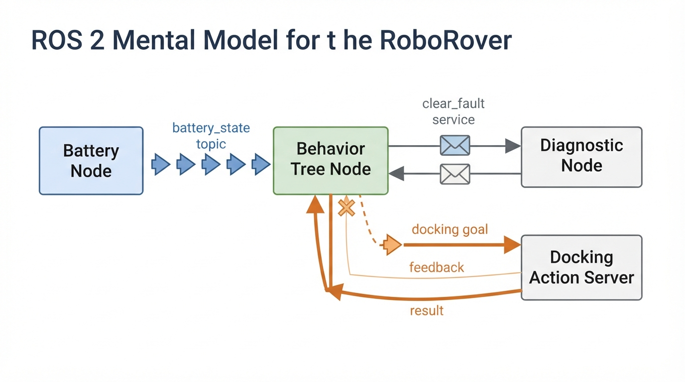
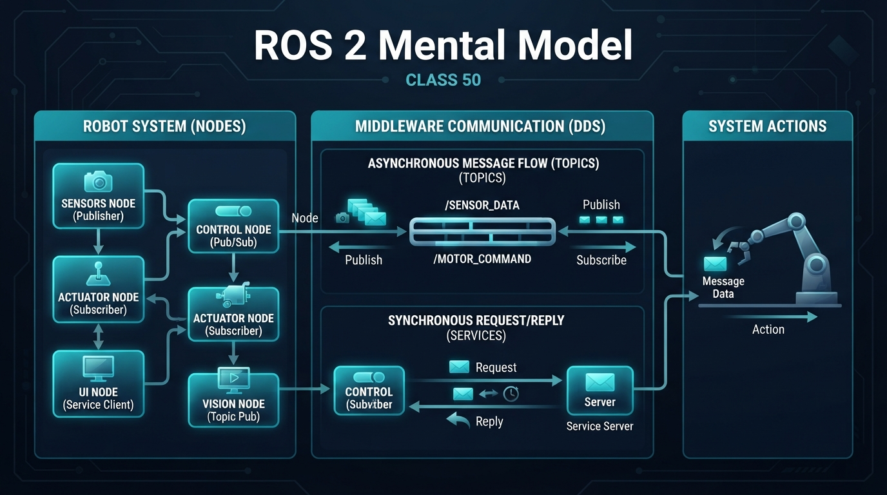
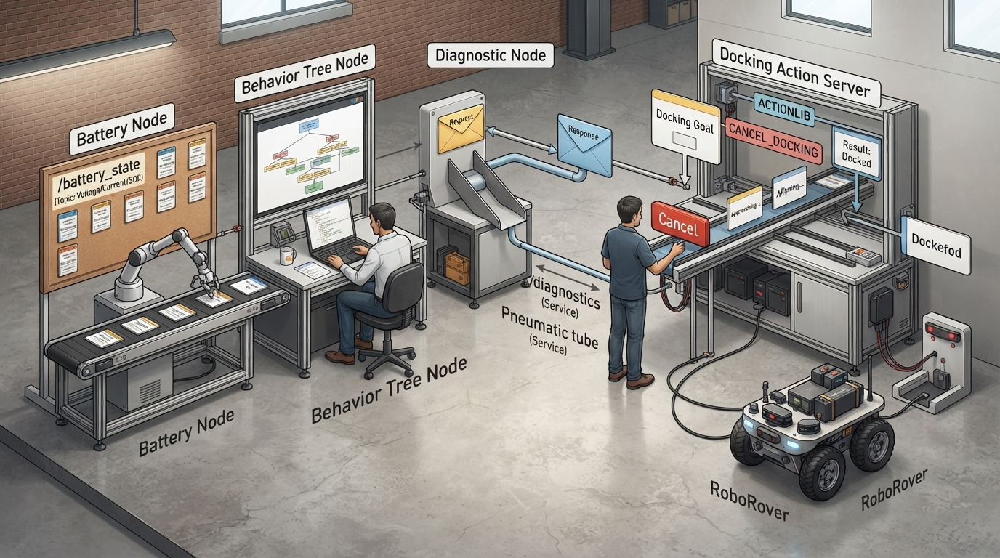
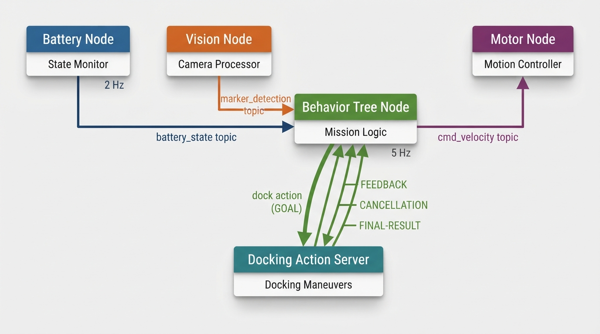

Class 50: ROS 2 Mental Model
Where We Are in the Robotics Journey
RoboRover has learned to choose actions with a Behavior Tree. A behavior tree answers questions such as:
- “Is the battery low?”
- “Should I search for the charging station?”
- “Should I drive toward the delivery zone?”
- “Did the last action succeed?”
That was the decision structure.
Now we need to ask a different engineering question:
How do the different software parts of RoboRover communicate?
A behavior tree may decide, “Drive to the blue marker,” but another software component must read the camera, another must command the motors, and another may report battery voltage. These components should not all be tangled into one enormous program.
ROS 2 provides a common mental model for organizing this communication.
In this class, we will learn four related ideas:
- Nodes — logical software runtime entities.
- Topics — communication channels commonly used for recurring or asynchronous data.
- Services — request-and-response interfaces for short, bounded operations.
- Actions — interfaces for longer operations that need progress, cancellation, and a final result.
The next class will examine messages and topics more closely: what a message contains, how publishers and subscribers use it, and why message design matters.
Today We Will Learn
By the end of this class, you should be able to:
- describe a ROS 2 node in plain language;
- distinguish a topic from a service and an action;
- sketch a simple ROS 2 communication graph;
- explain how a behavior tree can use ROS 2 components;
- calculate a simple message rate and data volume;
- identify practical problems such as stale data, delays, unavailable services, and timeouts;
- run a small Python simulation of nodes, a topic, an optional service-based readiness check, and an action goal.
ROS 2 itself is a robotics software framework. Our Python activity will model selected communication ideas without requiring a ROS 2 installation.
2-Minute Recap
A Behavior Tree is a structured way to select actions. A condition checks something, and an action attempts something. Nodes in a behavior tree often return statuses such as:
- Success — the task completed;
- Failure — the task could not be completed;
- Running — the task is still in progress.
Consider RoboRover’s charging behavior:
Sequence
├── Is battery below 25%?
└── Go to charging stationThe behavior tree decides what RoboRover should attempt. It does not necessarily contain all camera drivers, motor-control code, battery-reading code, and wheel encoder processing.
ROS 2 helps those software parts communicate while remaining separate.
The Big Idea

Figure: A topic carries recurring messages, a service represents a bounded request and response, and an action manages a longer operation with feedback and a result.
Imagine RoboRover as a small company.
- A node is a logical software participant with a focused responsibility. It may run in its own process or as a composable component within a process.
- A topic is a notice board where departments publish updates.
- A service is a counter where one department requests a short, bounded operation and receives a response.
- An action is a job desk for a longer operation that can report progress, be cancelled, and eventually return a result.
For example:
[Battery Node] ── publishes battery_state ──> [Behavior Tree Node]
|
└── provides clear_battery_fault serviceA larger system might look like this:
[Camera Node] ── image topic ──> [Vision Node]
|
└── marker topic ──> [Behavior Tree Node]
|
[Wheel Encoder Node] ── odometry topic ──> [Navigation Node]
|
└── velocity command topic ──> [Motor Node]The arrows represent software communication. The rectangular boxes represent logical software nodes. They are not a physical wiring diagram.
Nodes
A node is a logical runtime entity with a focused responsibility. A node can be deployed as a standalone process, or it can be implemented as a composable component loaded into a shared process with other nodes.
Examples:
camera_nodeobtains images;battery_nodemeasures voltage;motor_nodereceives velocity commands;vision_nodedetects colored markers;behavior_tree_nodeselects tasks.
A node may publish, subscribe, provide services, call services, send action goals, or perform several of these roles.
A node is not necessarily one Python file or one independently deployed operating-system process. It is better to think of it as a named participant in the robot’s communication system.
Topics
A topic is commonly used for messages that may occur repeatedly or asynchronously.
Examples:
- camera images;
- wheel speed measurements;
- battery state;
- obstacle detections;
- velocity commands.
A node publishes messages to a topic. Other nodes subscribe to that topic.
The publisher does not normally need to know every subscriber. This reduces coupling. A battery node can publish battery information whether one dashboard or five diagnostic tools are listening.
Topics are especially useful for streams:
battery_node ── battery_state ──> behavior_tree_node
└──> dashboard_node
└──> safety_monitor_nodeROS 2 topics are not inherently only asynchronous streams: their scheduling and delivery behavior depends on the middleware, executors, queues, quality-of-service settings, and application design. A subscriber is not guaranteed to process every newest message immediately. Queue depth, QoS compatibility, executor scheduling, callback processing time, and application logic affect which messages are received and processed. “Recurring or asynchronous data” is useful beginner shorthand for common topic use.
Services
A service is a request-and-response interface.
Services are appropriate for short, bounded operations such as:
- “Clear this fault.”
- “Reset this subsystem.”
- “Return the current configuration value.”
- “Report a diagnostic summary.”
Some operations often described informally as service calls—such as opening a gripper, saving a map, or starting calibration—may take long enough to need an action instead. The correct choice depends on duration, cancellation needs, progress reporting, and the interface contract.
A service is not inherently transactional in the database sense. It simply defines a request and a response.
[Behavior Tree Node] ── request: clear_fault ──> [Diagnostic Node]
[Behavior Tree Node] <─ response: cleared=true ── [Diagnostic Node]A service client can make an asynchronous service call rather than blocking the entire robot system. The client should still apply a timeout and define what to do if the response is late or absent.
Actions
An action is designed for a longer-running operation. An action commonly provides:
- a goal sent by a client;
- a goal response indicating whether the server accepted or rejected that goal;
- feedback while the operation runs;
- cancellation;
- a final result after execution finishes.
The goal response is not the final result. Acceptance means that the action server agreed to begin or manage the requested operation. The later result reports whether execution succeeded, failed, or was otherwise terminated.
Docking is typically a long-running, cancellable operation with progress and feedback. Therefore, a realistic design represents the docking process itself with an action:
[Behavior Tree Node] ── action goal: dock ──> [Docking Action Server]
[Behavior Tree Node] <─ goal response: accepted/rejected
[Behavior Tree Node] <─ feedback: aligning ── [Docking Action Server]
[Behavior Tree Node] <─ result: success/fail ─ [Docking Action Server]An application may optionally use a separate service to perform a short admission or readiness check before sending the action goal. ROS 2 actions do not normally require a preceding service: an action goal already has its own goal-acceptance mechanism.
See It in Your Head
AI-Generated Engineering Visual · Professor OS

How to read this visual: Identify the named topic, the service request and response, and the action goal, feedback, cancellation path, and result. Then trace each path from its sending node to its receiving node. Which path carries recurring data? Which path can report that a request is unavailable? Which path distinguishes goal acceptance from eventual completion?

Figure: The workshop analogy makes the difference between a recurring topic notice board, a bounded service exchange, and a long-running action visible.
Picture a workshop containing three labeled machines:
- Battery Node
It measures RoboRover’s battery and places a small card on the battery_state notice board.
- Behavior Tree Node
It reads the newest card available to its application. If the voltage is low, it decides to start docking.
- Docking Action Node
It accepts or rejects a docking goal, reports progress while docking, supports cancellation, and eventually returns a result.
The workshop has three communication styles:
Recurring observation:
Battery Node ──> battery_state topic ──> Behavior Tree Node
Optional short readiness check:
Behavior Tree Node ── request ──> Diagnostic Node
Behavior Tree Node <─ response ─── Diagnostic Node
Long-running operation:
Behavior Tree Node ── docking goal ──> Docking Action Node
Behavior Tree Node <─ goal response ── Docking Action Node
Behavior Tree Node <─ progress/result ── Docking Action NodeThe optional readiness check is an application-specific design. The action goal itself already has a goal-acceptance response, so a preceding service is not a normal ROS 2 requirement.
This distinction is important: the behavior tree chooses an intention; ROS 2 communication connects that intention to specialized software.
Core Concept
Topics are commonly used for recurring data
When a battery node publishes a voltage, it does not necessarily pause until the behavior tree has finished processing it. The message enters the communication system, and subscribers process it according to their own timing.
This allows different components to run at different rates:
- a camera at 10 images per second;
- a motor controller at 50 command updates per second;
- a battery monitor at 2 measurements per second;
- a behavior tree tick at 5 times per second.
The subscriber may work with the newest message currently available to its callback, but delivery does not guarantee that every subscriber has the newest message at every instant. Queue depth, QoS, executor scheduling, callback duration, and application logic affect which messages are processed.
Services are bounded request-and-response interfaces
A service resembles asking a technician:
“Please perform this short operation, and tell me whether it worked.”
The response may contain success information, a result, or an error explanation.
A service is a good fit for an operation with a clear, bounded request and response. It is less suitable for a high-rate sensor stream or a long-running operation that needs progress and cancellation.
The client need not block the whole robot while waiting. A ROS 2 client can issue an asynchronous service request, monitor its future, and enforce a timeout.
Actions are for longer operations
An action is appropriate when an operation may take substantial time or needs progress, cancellation, and a final result. Examples include:
- docking;
- navigation to a goal;
- calibration;
- manipulation;
- a long map-saving operation.
The action client can continue running other node work while the action server performs the operation.
The action’s goal response and final result have different meanings:
- Goal response: whether the server accepted or rejected the requested goal.
- Feedback: progress information while an accepted goal is executing.
- Final result: the outcome after execution finishes or terminates.
The ROS graph
The collection of nodes and their communication connections is often called a ROS graph.
The graph is not a map of physical space. It is a map of software communication.
RoboRover may be physically in a hallway, while its ROS graph contains:
camera_node
vision_node
battery_node
behavior_tree_node
motor_node
diagnostics_node
docking_action_serverThe graph describes who communicates with whom, not where the robot is located.
A behavior-tree graph is different: it describes control-flow relationships such as sequences, selectors, and conditions. A physical wiring diagram describes sensors, actuators, power, and hardware connections. The arrows in these three diagrams do not all mean the same thing.
ROS 2 does not remove engineering responsibility
ROS 2 can connect components, but it cannot automatically make the system correct.
You still need to decide:
- What does each message mean?
- What units are used?
- How old may a measurement be?
- What happens if a node crashes?
- What happens if a service is unavailable or never responds?
- What happens if an action goal is rejected or cancelled?
- What command is safe when communication stops?
These are engineering decisions, not merely programming syntax.
Math Without Fear
Suppose RoboRover’s battery node publishes one battery message every \(0.5\ \text{s}\).
The publication frequency is:
where:
- \(f\) is frequency in hertz, \(\text{Hz}\), meaning messages per second;
- \(T\) is the period in seconds per message.
Substituting:
So the battery node publishes 2 messages per second.
Now suppose each message contains 3 floating-point values, and each value occupies 8 bytes in our simplified calculation. Ignoring headers and communication overhead:
The payload rate, also called payload throughput in this simplified context, is:
where:
- \(R\) is payload data rate in bytes per second;
- \(f\) is message frequency in messages per second;
- \(S\) is payload size in bytes per message.
Therefore:
This is a small data stream.
A camera image topic can be dramatically larger. That is one reason robotics engineers pay attention to message rates, message sizes, compression, payload throughput, and network capacity.
Worked Robotics Example

Figure: The behavior tree makes decisions while specialized nodes provide measurements, motor commands, and a docking action.
The initial system graph includes camera, vision, wheel-encoder, navigation, and motor communication to show how a realistic robot can be decomposed. For a focused worked example, we now reduce the graph to the components needed to demonstrate battery freshness, a behavior-tree decision, motor communication, and docking. This reduction makes the timing and communication decisions easier to inspect.
RoboRover is carrying a small package. Its software is divided into four nodes and one action server:
| Component | Main responsibility | Communication |
|---|---|---|
battery_node | Measures battery voltage | Publishes battery_state |
vision_node | Finds the blue delivery marker | Publishes marker_detection |
behavior_tree_node | Chooses the next task | Subscribes and initiates operations |
motor_node | Converts velocity commands into wheel commands | Subscribes to cmd_velocity |
docking_action_server | Performs the long-running docking operation | Accepts goals, publishes feedback, and returns a result |
The behavior tree receives a battery message every \(0.5\ \text{s}\), or \(2\ \text{Hz}\). It checks the newest battery reading available to its application whenever its tree tick runs.
Suppose the behavior tree ticks every \(0.2\ \text{s}\):
The tree may therefore evaluate its battery condition five times per second while the battery measurement changes only twice per second.
That is not automatically wrong. Between battery measurements, the tree may read the most recently received value. But the value may become stale.
If the latest battery message is \(1.4\ \text{s}\) old, the behavior tree should not pretend it is a fresh measurement. A safety-oriented design might label it stale and avoid making an important decision from it.
A possible sequence is:
battery_nodepublishes \(11.8\ \text{V}\) with a timestamp.behavior_tree_nodereceives it.- The tree later receives a fresh \(11.2\ \text{V}\) reading and decides to dock.
- The tree optionally sends a short readiness or admission request to an application-specific service.
- If that optional check is accepted, the tree sends a docking goal to the docking action server.
- The action server returns a goal response indicating acceptance or rejection.
- If accepted, it reports progress and eventually returns a final result.
The optional service is not required by ROS 2 actions. It is included here only to model a possible application-specific readiness check. The action goal has its own acceptance mechanism.
Notice the division of responsibility:
- the battery node measures;
- the topic transports the measurement;
- the behavior tree decides;
- the optional service performs a short bounded check;
- the action server manages the long-running docking operation.
A service might also be used for a short, separate operation such as clearing a docking fault, but it should not be used to represent the entire docking process when that process needs progress or cancellation.
Python Lab
The following Python 3.7 program is a small ROS-like simulation. It contains:
- a
Topicclass for publishing and subscribing; - a
Serviceclass for an optional, application-specific short admission or readiness check; - an
Actionclass representing acceptance of a long-running docking goal; - a
BatteryNodethat publishes battery measurements with simulated timestamps; - a
BehaviorTreeNodethat checks measurement age; - modeled service-availability and timeout branches.
This is not ROS 2 itself. Topic.publish() invokes callbacks immediately and synchronously, unlike distributed ROS 2 communication. The model does not reproduce middleware scheduling, queues, quality-of-service policies, executors, serialization, or network timing.
The service and action delays below are modeled values, not real sleeping or measured ROS 2 timings. In a real ROS 2 node, the client can make an asynchronous service call and apply a timeout without blocking the entire robot system. The action goal’s acceptance response is separate from the later action result; this compact model returns the acceptance decision from Action.start() but does not simulate feedback or final execution.
class Topic:
def __init__(self, name):
self.name = name
self.subscribers = []
def subscribe(self, callback):
self.subscribers.append(callback)
def publish(self, message):
# Simplified conceptual delivery: callbacks run immediately.
for callback in self.subscribers:
callback(message)
class Service:
def __init__(self, name, handler, available=True, response_delay_s=0.0):
self.name = name
self.handler = handler
self.available = available
self.response_delay_s = response_delay_s
def call(self, request, timeout_s):
if not self.available:
return {
"accepted": False,
"reason": "SERVICE_UNAVAILABLE"
}
if self.response_delay_s > timeout_s:
return {
"accepted": False,
"reason": "SERVICE_TIMEOUT"
}
return self.handler(request)
class Action:
def __init__(self, name, available=True):
self.name = name
self.available = available
def start(self, goal):
# This return value models the action goal response:
# acceptance or rejection of the goal, not final completion.
if not self.available:
return {
"accepted": False,
"reason": "ACTION_UNAVAILABLE"
}
return {
"accepted": True,
"status": "RUNNING",
"goal": goal
}
class BatteryNode:
def __init__(self, battery_topic):
self.battery_topic = battery_topic
self.voltage = 11.8
def publish_measurement(self, now_s):
message = {
"voltage_v": self.voltage,
"stamp_s": now_s,
"source": "battery_node"
}
self.battery_topic.publish(message)
class BehaviorTreeNode:
def __init__(
self,
battery_topic,
docking_service,
docking_action,
max_battery_age_s=1.0,
service_timeout_s=0.5
):
self.latest_battery = None
self.docking_service = docking_service
self.docking_action = docking_action
self.max_battery_age_s = max_battery_age_s
self.service_timeout_s = service_timeout_s
battery_topic.subscribe(self.receive_battery)
def receive_battery(self, message):
self.latest_battery = message
def tick(self, now_s):
if self.latest_battery is None:
return "WAITING_FOR_BATTERY"
age_s = now_s - self.latest_battery["stamp_s"]
if age_s < 0.0 or age_s > self.max_battery_age_s:
return "STALE_BATTERY"
voltage = self.latest_battery["voltage_v"]
if voltage < 11.5:
# Optional, application-specific readiness/admission check.
# ROS 2 actions do not require a preceding service.
response = self.docking_service.call(
{
"reason": "low_battery"
},
timeout_s=self.service_timeout_s
)
if not response["accepted"]:
return response["reason"]
# This models the action's own goal-acceptance response.
# It is not the final result of docking.
action_response = self.docking_action.start({
"reason": "low_battery"
})
if action_response["accepted"]:
return "DOCKING_ACTION_STARTED"
return action_response["reason"]
return "CONTINUE_MISSION"
def docking_request_handler(request):
if request["reason"] == "low_battery":
return {
"accepted": True,
"message": "Docking goal may be started"
}
return {
"accepted": False,
"reason": "REQUEST_REJECTED"
}
def main():
battery_topic = Topic("battery_state")
# This optional application-specific service models a bounded
# admission/readiness check before sending the action goal.
docking_service = Service(
"request_docking",
docking_request_handler,
available=True,
response_delay_s=0.1
)
# The action models the actual long-running docking operation.
# start() models only the goal response, not final completion.
docking_action = Action("dock", available=True)
battery_node = BatteryNode(battery_topic)
behavior_node = BehaviorTreeNode(
battery_topic,
docking_service,
docking_action,
max_battery_age_s=1.0,
service_timeout_s=0.5
)
battery_node.publish_measurement(now_s=0.0)
first_decision = behavior_node.tick(now_s=0.2)
assert first_decision == "CONTINUE_MISSION"
battery_node.voltage = 11.2
battery_node.publish_measurement(now_s=0.5)
second_decision = behavior_node.tick(now_s=0.6)
assert second_decision == "DOCKING_ACTION_STARTED"
stale_decision = behavior_node.tick(now_s=1.7)
assert stale_decision == "STALE_BATTERY"
docking_service.available = False
battery_node.publish_measurement(now_s=2.0)
unavailable_decision = behavior_node.tick(now_s=2.1)
assert unavailable_decision == "SERVICE_UNAVAILABLE"
print("First decision:", first_decision)
print("Second decision:", second_decision)
print("Stale-data decision:", stale_decision)
print("Unavailable-service decision:", unavailable_decision)
print("Verified: fresh low voltage started a docking action.")
print("Verified: stale data and service unavailability were detected.")
if __name__ == "__main__":
main()The verified output is:
First decision: CONTINUE_MISSION
Second decision: DOCKING_ACTION_STARTED
Stale-data decision: STALE_BATTERY
Unavailable-service decision: SERVICE_UNAVAILABLE
Verified: fresh low voltage started a docking action.
Verified: stale data and service unavailability were detected.The assert statements verify the exact decisions made by the program:
- the first decision is
CONTINUE_MISSION; - the fresh low-voltage reading produces
DOCKING_ACTION_STARTED; - a message \(1.2\ \text{s}\) old is rejected as
STALE_BATTERY; - an unavailable optional service produces
SERVICE_UNAVAILABLE.
Important lines:
battery_topic.subscribe(self.receive_battery)connects the behavior node to the topic.battery_topic.publish(message)sends a message to subscribers.stamp_sallows the behavior node to calculate message age.max_battery_age_sdefines the maximum acceptable age.docking_service.call(...)represents an optional bounded admission request with a modeled timeout.docking_action.start(...)represents the action goal response.- The action’s
acceptedvalue means that the goal was accepted, not that docking has finished. - The
assertstatements verify the exact decisions made by the program.
The behavior tree node does not directly reach inside the battery node. It receives a message through a named communication channel.
Mini Simulation or Game
Play “ROS graph designer” with RoboRover.
On paper, draw these six cards:
- Camera
- Vision
- Behavior Tree
- Battery
- Motor
- Docking Action Server
Now assign each card one responsibility.
Your task is to draw arrows using three different styles:
- a one-way stream arrow for a topic;
- a request-and-response pair for a service;
- a goal, feedback, cancellation, and result relationship for an action.
Create this graph:
Camera ── image topic ──> Vision
Vision ── marker topic ──> Behavior Tree
Battery ── battery topic ──> Behavior Tree
Behavior Tree ── velocity topic ──> Motor
Behavior Tree ── docking goal ──> Docking Action Server
Docking Action Server ── feedback/result ──> Behavior TreeA short service, such as clear_fault, could be drawn separately if the diagnostic node provides one. An application-specific readiness service could also be drawn before the docking goal, but it is optional. Do not draw the entire long-running docking process as a service response.
Predict before you run it
Before running the Python program, predict:
- What will the first behavior-tree decision be when the voltage is \(11.8\ \text{V}\)?
- What will the second decision be after the voltage changes to \(11.2\ \text{V}\)?
- What will happen when the stored battery message becomes \(1.2\ \text{s}\) old?
- What will happen when the optional docking-request service becomes unavailable?
- Which interaction uses a topic?
- Which interaction is the optional service check?
- Which interaction sends and accepts the docking action goal?
- Why does acceptance of the action goal not prove that docking has succeeded?
Then run the program and compare your prediction with the verified assertions and printed decisions.
What Should Happen?
The first battery message contains \(11.8\ \text{V}\). Since that is not below the program’s \(11.5\ \text{V}\) threshold, the behavior node returns:
CONTINUE_MISSIONThe next message contains \(11.2\ \text{V}\) and has a fresh timestamp. The behavior node makes an optional short docking admission request. After the request is accepted, it sends a docking goal to the action server. The action server accepts the goal, so the behavior node returns:
DOCKING_ACTION_STARTEDThis means that the action goal was accepted and the operation was started. It does not mean that docking has already completed successfully. A complete action would later provide feedback and a final result.
When the most recent battery message is more than \(1.0\ \text{s}\) old, the behavior node returns:
STALE_BATTERYWhen the modeled docking-request service is unavailable, the behavior node returns:
SERVICE_UNAVAILABLEThe topic carries the battery measurement. The optional bounded service request checks whether docking may be started. The action represents the actual longer-running docking process and has its own goal-acceptance response.
The exact results are checked by the assert statements inside the program.
Common Mistakes
Mistake 1: Treating a topic like a function call
A topic is usually a stream or channel of messages. Publishing does not mean “run this other function and immediately return its result.”
Use a service when a short, bounded request-and-response interaction is the right model.
Mistake 2: Using a service for every sensor reading
A camera or encoder can produce many readings per second. Making a separate request for each reading can introduce avoidable waiting and coordination problems. A topic is generally more suitable for repeated data.
Mistake 3: Assuming a service must precede every action
An application may add a readiness or admission service, but ROS 2 actions do not normally require one. An action goal already has a goal-acceptance mechanism.
The goal response only says whether the action server accepted the goal. It is distinct from feedback during execution and the final result after execution.
Mistake 4: Using a service for a long-running operation
A docking operation may need progress feedback, cancellation, and a final result. A service response that only says “accepted” does not represent the complete docking process. An action is generally a better interface for the operation itself.
Mistake 5: Assuming the newest message is always fresh
A subscriber may still hold an old measurement if the publisher stopped, communication is delayed, the queue contains older messages, the QoS settings do not provide the intended delivery behavior, or the receiving node is overloaded.
A robust node should consider:
- message timestamp;
- maximum acceptable age;
- queue and QoS behavior;
- missing-message behavior;
- safe fallback action.
Mistake 6: Confusing a node with a physical part
A node is a software component. One physical sensor may be managed by one node, several logical functions may share a process, and a robot may have many nodes that cooperate with one actuator.
A node is also not necessarily an independently deployed process: ROS 2 systems can use composable nodes within a shared process.
Mistake 7: Forgetting service or action failure
A service may be unavailable, reject a request, or take longer than expected. An action may reject a goal, lose communication, be cancelled, or fail during execution. A behavior tree should not remain indefinitely in a waiting state without a timeout or fallback plan.
Practical engineering caveat: communication is not magic
Real robots experience latency, dropped communication, overloaded processors, startup ordering problems, and incompatible message assumptions.
For example, if RoboRover’s motor node stops receiving velocity commands, continuing the last command forever could be dangerous. Engineers often design a timeout or “watchdog” behavior that stops motion when commands become too old.
The exact safety mechanism depends on the robot and hardware, but the principle is general:
Every important communication path needs a sensible failure behavior.
The optional emergency-state extension in this lesson is only a software simulation. A real emergency stop must use an independent, safety-appropriate hardware or control path; it must not rely solely on a ROS service.
Try It Yourself
Challenge
Modify the program so the behavior node distinguishes three voltage ranges:
- above or equal to \(11.5\ \text{V}\): continue;
- below \(11.5\ \text{V}\) but at least \(10.8\ \text{V}\): request docking readiness, then send a docking goal if the check succeeds;
- below \(10.8\ \text{V}\): request an emergency-state transition through a simulated software service instead.
Keep the topic, optional service checks, and action ideas separate. Model service availability and a timeout for both requests.
For the docking branch, remember that a service can represent a short application-specific readiness or admission check, while the actual docking operation should be represented by an action. The action goal has its own acceptance response.
For the emergency-state simulation, add assertions for the three voltage cases. Name the simulated request something such as request_emergency_state, rather than presenting it as a real emergency-stop mechanism.
Do not use this simulated emergency-state service as a model for real safety hardware.
Optional extension
Add a second subscriber called DashboardNode. It should receive every battery message and print a short status such as:
Dashboard received 11.8 VDo not make the battery node call the dashboard directly. The dashboard should receive the information by subscribing to the topic. This demonstrates why topics reduce direct connections between components.
Quick Quiz
- What is the main responsibility of a ROS 2 node?
- RoboRover publishes battery voltage repeatedly so several components can observe it. Should this normally use a topic or a service?
- RoboRover needs to clear a diagnostic fault with a short request and response. Should this normally use a topic, a service, or an action?
- RoboRover’s behavior tree starts docking, which may take time and needs progress, cancellation, and a final result. Should the docking operation normally use a service or an action?
- What is the difference between an action goal response and an action result?
- Why can an old topic message be dangerous in a real robot?
Answers
- A node is a focused logical software runtime entity that performs a responsibility and may communicate with other nodes. It may run as a standalone process or as a composable component.
- A topic, because battery voltage is a repeating stream of data.
- A service, because clearing the fault is modeled as a short request followed by a response.
- An action, because docking is a longer-running operation that may need goal acceptance, feedback, cancellation, and a final result.
- The goal response says whether the action server accepted or rejected the requested goal. The result reports the outcome after the accepted operation finishes or terminates. Acceptance is not the same as successful completion.
- The robot may make a decision using information that no longer describes the current physical situation. For example, it might believe a battery measurement is recent when the battery node has stopped publishing.
Real Robot Connection
In a real ROS 2 robot, the graph may contain dozens or hundreds of nodes. The motor controller may be separate from the navigation software. The camera driver may be separate from marker detection. A diagnostic system may subscribe to many topics without changing the main behavior.
This modular structure has practical benefits:
- a camera node can be replaced without rewriting the behavior tree;
- a new dashboard can observe existing topics;
- a simulator can publish synthetic sensor data;
- a test node can imitate a motor or battery component;
- failures can be isolated more easily.
It also creates integration work. All components must agree on message meaning, units, timing, names, QoS expectations, and failure behavior.
The relationship with Behavior Trees is especially useful:
- the behavior tree organizes decisions and task status;
- nodes implement specialized capabilities;
- topics commonly carry ongoing observations and commands;
- services support short request-and-response operations;
- actions manage longer operations with progress, cancellation, and results.
The next class will focus on the contents of those communications: message fields, topic data, units, timestamps, and the design choices that make messages reliable rather than ambiguous.
Vocabulary
- ROS 2 — A robotics software framework and communication ecosystem used to organize cooperating robot software.
- Node — A logical software runtime entity with a focused responsibility that can communicate with other components. It may be deployed as a standalone process or as a composable component.
- Topic — A named communication channel used mainly for publishing and subscribing to messages, especially recurring or asynchronous data.
- Publisher — A node or component that sends messages to a topic.
- Subscriber — A node or component that receives messages from a topic.
- Service — A named request-and-response interface for asking a component to perform a short, bounded operation or provide a result.
- Service client — The component that sends a service request.
- Service server — The component that receives a service request and produces a response.
- Action — An interface for a longer-running operation that can accept or reject a goal, provide feedback, support cancellation, and return a final result.
- Action client — The component that sends an action goal and monitors its goal response, progress, and result.
- Action server — The component that accepts or rejects an action goal, executes an accepted goal, and provides feedback and a result.
- ROS graph — The network of nodes and their communication connections.
- Latency — The delay between an event, such as publishing a message, and its reception or use.
- Stale data — Information that is too old to safely represent the current state of the robot or environment.
- Message rate — The number of messages transmitted per unit time, commonly measured in hertz.
- Throughput — The amount of payload data transferred per unit time, commonly measured in bytes per second.
- Timeout — A limit on how long software waits for a response or progress before taking a fallback action.
Further Learning
For continued study, look for learning resources using search terms such as:
- “ROS 2 nodes topics services actions beginner”
- “ROS 2 communication graph”
- “ROS 2 message timestamps and quality of service”
- “ROS 2 Python publisher subscriber”
- “robot software watchdog timeout design”
When studying examples, always ask:
- Which part is a node?
- Which data is a topic stream?
- Which interaction is a short service?
- Which interaction needs an action?
- What happens if the communication fails?
- What units and timestamps does each message use?
- Does an action goal response merely indicate acceptance, or is a final result available?
Next Class
Class 51: Messages and Topics
Next, we will open the messages themselves. RoboRover will publish structured data containing fields such as voltage, timestamp, and sensor status. We will examine why names, units, timestamps, and message meaning are essential when multiple nodes share information.